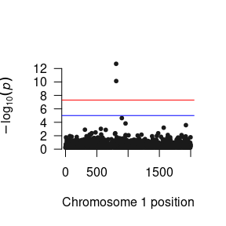
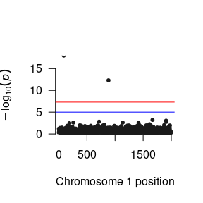
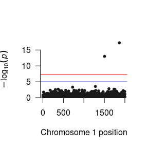

In a standard GWAS analyses, a single phenotype is repeatedly regressed on each single nucleotide polymorphism (SNP) in the users genomic data file (as well as a fixed set of covariates). While there are several software packages that allow users to conduct GWAS analyses, GW-SEM is the only routine that allows users to conduct GWAS analyses that model ordinal data as a probit response, relying on a liability-threshold model to link the observed ordinal variable to a continuous underlying liability. GW-SEM can also manage quantitative (continuous) or binary (case-control) variables in the same manner as other standard GWAS software packages.
To demonstrate how to conduct a GWAS using GW-SEM, we use simulated data for three correlated phenotypes for 6,000 individuals with accompanying GWAS data consisting of 2,000 SNPs, as well as 6 covariates (that are a proxy for age, sex, ancestry principle components or other confounds). As we are not allowed to post the raw data online, we simulated similar data that we use in this demonstration. The first step in the analysis is to load the GW-SEM package in R. The command load the packages is:
library(gwsem)
#> Loading required package: OpenMx
#> To take full advantage of multiple cores, use:
#> mxOption(key='Number of Threads', value=parallel::detectCores()) #now
#> Sys.setenv(OMP_NUM_THREADS=parallel::detectCores()) #before library(OpenMx)
#>
#> Attaching package: 'gwsem'
#> The following object is masked from 'package:base':
#>
#> signifAfter GW-SEM has been loaded into the R environment, you can read in the phenotypic data, examine it, and recode variables as necessary. For the current example, this can be done using the following commands:
location <- 'https://jpritikin.github.io/gwsem/gwsemItemExample/'
# Read the phenotype data into R and look at the data
phenoData <- read.table(file.path(location, "itemPhenoData.txt"),
header=TRUE)
head(phenoData)
#> tobacco cannabis alcohol pc1 pc2 pc3 pc4
#> 1 2 3 0 -0.6692077 -1.59248351 -0.6648463 0.09277401
#> 2 1 1 0 1.8676228 0.24132599 -0.2799667 0.18483088
#> 3 0 0 0 0.2991572 -0.29125218 0.4060377 1.24527580
#> 4 0 0 1 -1.5104513 3.12487392 0.5867622 -0.76880776
#> 5 2 3 2 -0.7101579 -0.17109929 -0.2001498 -0.19719950
#> 6 2 3 4 0.7511404 0.05465809 1.0260702 2.19846930
#> pc5
#> 1 -0.9351552
#> 2 -0.9795520
#> 3 0.2449974
#> 4 -0.4592330
#> 5 -0.4026468
#> 6 0.2845062
table(phenoData$tobacco)
#>
#> 0 1 2
#> 2000 2000 2000
table(phenoData$cannabis)
#>
#> 0 1 2 3
#> 1500 1500 1500 1500
table(phenoData$alcohol)
#>
#> 0 1 2 3 4
#> 1200 1200 1200 1200 1200As you can see, the tobacco variable is an categorical variable with 3 levels, cannabis is an categorical variable with 4 levels, and alcohol is an categorical variable with 5 levels. To tell R that you want to treat these variables as ordinal, you can use the following mxFactor() commands:
phenoData$tobacco <- mxFactor(phenoData$tobacco , levels = 0:2)
phenoData$cannabis <- mxFactor(phenoData$cannabis , levels = 0:3)
phenoData$alcohol <- mxFactor(phenoData$alcohol , levels = 0:4)After you are confident that the variables are recoded in the optimal manner, you can begin building the GWAS model. To being with, let’s look at how to do a standard GWAS with only one item. The first step in conducting the GWAS analysis is to to build a general model. This takes a series of arguments:
tob <- buildItem(phenoData = phenoData, # the phenotypic data object
depVar = c("tobacco"), # the outcome or dependent variable
covariates=c('pc1','pc2','pc3','pc4','pc5'), # the necessary covariates
fitfun = "WLS") # the fit function (WLS is much faster than ML)After you have built the model and put it into an object (named tob), you can take this object which is technically an OpenMx model, and fit it using mxRun()"
tobFit <- mxRun(tob)
#> Running OneItem with 8 parameters
summary(tobFit)
#> Summary of OneItem
#>
#> free parameters:
#> name matrix row col Estimate Std.Error
#> 1 snp_to_tobacco A tobacco snp 0.0079547736 0.02076189
#> 2 pc1_to_tobacco A tobacco pc1 -0.0024232344 0.01459601
#> 3 pc2_to_tobacco A tobacco pc2 0.0008759935 0.01435417
#> 4 pc3_to_tobacco A tobacco pc3 0.0084324080 0.01480966
#> 5 pc4_to_tobacco A tobacco pc4 0.0230969252 0.01433350
#> 6 pc5_to_tobacco A tobacco pc5 -0.0053262676 0.01462257
#> 7 tobacco_Thr_1 Thresholds 1 tobacco -0.4146929439 0.04460971
#> 8 tobacco_Thr_2 Thresholds 2 tobacco 0.4470613537 0.04464401
#>
#> Model Statistics:
#> | Parameters | Degrees of Freedom | Fit (r'Wr units)
#> Model: 8 5992 4.35677e-29
#> Saturated: 2 5998 0.00000e+00
#> Independence: 2 5998 NA
#> Number of observations/statistics: 6000/6000
#>
#> chi-square: χ² ( df=0 ) = 0, p = 1
#> CFI: NA
#> TLI: 1 (also known as NNFI)
#> RMSEA: 0 [95% CI (NA, NA)]
#> Prob(RMSEA <= 0.05): NA
#> To get additional fit indices, see help(mxRefModels)
#> timestamp: 2020-07-10 20:07:07
#> Wall clock time: 0.4480011 secs
#> optimizer: SLSQP
#> OpenMx version number: 2.17.4
#> Need help? See help(mxSummary)It is strongly advised to test out the model, as it is a great time to learn if your model is being specified in a way that you didn’t expect or that the model is not giving you the answers that you are expecting. Now, provided that the model looks reasonable, you can plug the model that you have built into the GWAS function. To fit this function, you must tell GW-SEM :
library(curl)
curl_download(file.path(location, 'example.pgen'),
file.path(tempdir(),'example.pgen'))
curl_download(file.path(location, 'example.pvar'),
file.path(tempdir(),'example.pvar'))
GWAS(model = tob, # where the model is
snpData = file.path(tempdir(),'example.pgen'), # where the snpData
out=file.path(tempdir(),"tob.log")) # where you want to save the results
#> Running OneItem with 8 parameters
#> Done. See '/tmp/RtmpdmiDTZ/tob.log' for resultsWhen you execute this command, you will begin running your GWAS.
After you finish running the GWAS analysis, the next step is to read the results in to R so that you can examine them, plot them, prepare them to be used by other software packages, etc. While you are unlikely to want to read all of the output into R, it is useful to do this on a small test GWAS analysis to ensure that you are getting reasonable results. To do so, you can use the base R function read.delim. This is didactically useful, but it contains much more information than most people want
Note that the results file is tab separated (with dates and times for each snp), so read.table will tell you that the the number of column names does not match the number of data columns.
More reasonably, we will want to examine the results for a specific parameter using the loadResults function. This function takes takes two arguments: the path to the data and the column in the results # file for the parameter that you want to examine.
succinct <- loadResults(path = file.path(tempdir(), "tob.log"),
focus = "snp_to_tobacco")
succinct <- signif(succinct, focus = "snp_to_tobacco")In the post analysis section, I will give you a way to read several files into a single R object.
After you have read the results into R, you can manipulate them to your heart’s content. Here is a quick function to plot the p-values as a Manhattan plot:

As you will probably be conducting the GWAS analysis on a cluster, here are the essential components of the R script that you will need in your *.R file to run the GWAS.
library(gwsem)
# Read the phenotype data into R and look at the data
phenoData <- read.table(file.path(location, "itemPhenoData.txt"), header=TRUE)
phenoData$tobacco <- mxFactor(phenoData$tobacco , levels = 0:2)
phenoData$cannabis <- mxFactor(phenoData$cannabis , levels = 0:3)
phenoData$alcohol <- mxFactor(phenoData$alcohol , levels = 0:4)
tob <- buildItem(phenoData = phenoData, depVar = c("tobacco"),
covariates=c('pc1','pc2','pc3','pc4','pc5'),
fitfun = "WLS")
GWAS(model = tob,
snpData = file.path(tempdir(), 'example.pgen'),
out= file.path(tempdir(), "tob.log"))
#> Running OneItem with 8 parameters
#> Done. See '/tmp/RtmpdmiDTZ/tob.log' for resultsThe process for conducting a multiple dependent variable GWAS is very similar to that for conducting a standard GWAS. The only substantive difference is that instead of telling GW-SEM that you have a single dependent variable, as we did above, we provide a list of dependent variables. GW-SEM will then regress multiple items on each SNP.
To conduct the multivariate GWAS model, the first thing that we would want to do is build a general model.
multi <- buildItem(phenoData, # the data object
depVar = c("tobacco", "cannabis", "alcohol"), # the dependent variables
covariates=c('pc1','pc2','pc3','pc4','pc5'), # the covariates
fitfun = "WLS") # the fit functionAgain, You can take this object (multi) which is technically an OpenMx model, and simply fit it using mxRun()
multiFit <- mxRun(multi)
#> Running OneItem with 30 parameters
summary(multiFit)
#> Summary of OneItem
#>
#> free parameters:
#> name matrix row col Estimate Std.Error
#> 1 snp_to_tobacco A tobacco snp 0.0241817856 0.02034588
#> 2 snp_to_cannabis A cannabis snp -0.0199913182 0.01949919
#> 3 snp_to_alcohol A alcohol snp -0.0179229310 0.01920985
#> 4 pc1_to_tobacco A tobacco pc1 -0.0020481841 0.01459091
#> 5 pc1_to_cannabis A cannabis pc1 0.0107644457 0.01385181
#> 6 pc1_to_alcohol A alcohol pc1 -0.0321883302 0.01365170
#> 7 pc2_to_tobacco A tobacco pc2 0.0006536988 0.01435419
#> 8 pc2_to_cannabis A cannabis pc2 -0.0089262391 0.01391543
#> 9 pc2_to_alcohol A alcohol pc2 -0.0118334213 0.01377511
#> 10 pc3_to_tobacco A tobacco pc3 0.0081378753 0.01480970
#> 11 pc3_to_cannabis A cannabis pc3 0.0061562558 0.01419017
#> 12 pc3_to_alcohol A alcohol pc3 0.0021350947 0.01370878
#> 13 pc4_to_tobacco A tobacco pc4 0.0229953224 0.01434041
#> 14 pc4_to_cannabis A cannabis pc4 -0.0088095194 0.01371192
#> 15 pc4_to_alcohol A alcohol pc4 0.0074305429 0.01341949
#> 16 pc5_to_tobacco A tobacco pc5 -0.0051558341 0.01462406
#> 17 pc5_to_cannabis A cannabis pc5 0.0188448216 0.01382696
#> 18 pc5_to_alcohol A alcohol pc5 0.0049707697 0.01369573
#> 19 OneItem.S[1,2] S tobacco cannabis 0.2956504143 0.01453116
#> 20 OneItem.S[1,3] S tobacco alcohol 0.3872856636 0.01343113
#> 21 OneItem.S[2,3] S cannabis alcohol 0.1982073158 0.01407850
#> 22 tobacco_Thr_1 Thresholds 1 tobacco -0.3823118343 0.04388997
#> 23 tobacco_Thr_2 Thresholds 2 tobacco 0.4795575027 0.04399313
#> 24 cannabis_Thr_1 Thresholds 1 cannabis -0.7148216790 0.04276513
#> 25 cannabis_Thr_2 Thresholds 2 cannabis -0.0399459470 0.04217264
#> 26 cannabis_Thr_3 Thresholds 3 cannabis 0.6347218574 0.04268052
#> 27 alcohol_Thr_1 Thresholds 1 alcohol -0.8794415634 0.04302955
#> 28 alcohol_Thr_2 Thresholds 2 alcohol -0.2907632337 0.04188706
#> 29 alcohol_Thr_3 Thresholds 3 alcohol 0.2161716252 0.04185044
#> 30 alcohol_Thr_4 Thresholds 4 alcohol 0.8048531068 0.04265984
#>
#> Model Statistics:
#> | Parameters | Degrees of Freedom | Fit (r'Wr units)
#> Model: 30 17970 3.055613e-28
#> Saturated: 9 17991 0.000000e+00
#> Independence: 6 17994 NA
#> Number of observations/statistics: 6000/18000
#>
#> chi-square: χ² ( df=0 ) = 0, p = 1
#> CFI: NA
#> TLI: 1 (also known as NNFI)
#> RMSEA: 0 [95% CI (NA, NA)]
#> Prob(RMSEA <= 0.05): NA
#> To get additional fit indices, see help(mxRefModels)
#> timestamp: 2020-07-10 20:07:36
#> Wall clock time: 0.2870831 secs
#> optimizer: SLSQP
#> OpenMx version number: 2.17.4
#> Need help? See help(mxSummary)Then you will use the same function that we used for the latent variable model, with a different model object
GWAS(model = multi,
snpData = file.path(tempdir(), 'example.pgen'),
out=file.path(tempdir(), "multi.log"))
#> Running OneItem with 30 parameters
#> Done. See '/tmp/RtmpdmiDTZ/multi.log' for resultsNow that we have run the residual’s model, we have multiple parameters that we want to load into R (three in this case). The function to do this is the same as for one parameter, but you need to do it several times (once for each parameter). This gives several R objects.

